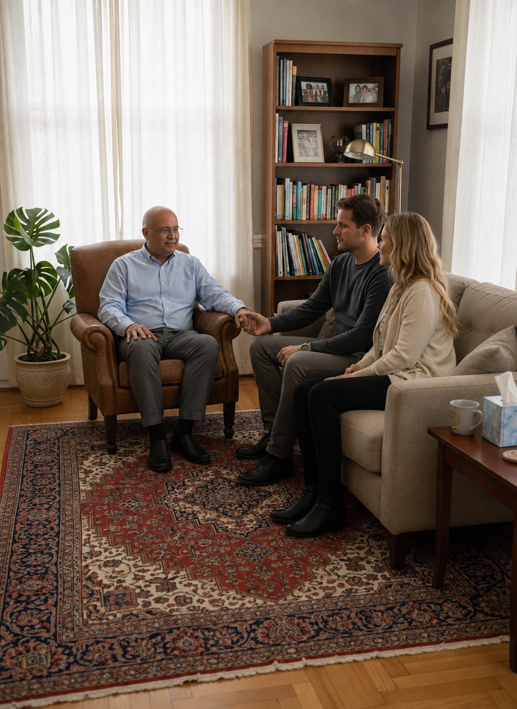
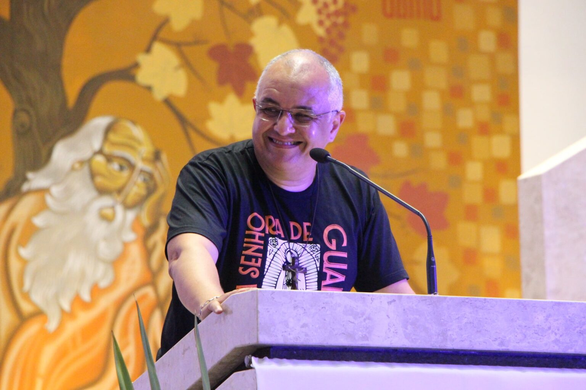

01
Terapia Individual
Um espaço reservado para compreender o que você está vivendo e buscar novos caminhos com acompanhamento e acolhimento.
Um espaço de escuta, acolhimento e orientação, onde o conhecimento terapêutico é integrado aos princípios e valores da fé católica.

Acredito que cada pessoa possui uma história única. Por isso, o processo terapêutico deve respeitar sua realidade, seus sentimentos, seus valores e sua dimensão espiritual.
Atendimento pensado para acolher diferentes momentos e necessidades da vida.
Um espaço reservado para compreender o que você está vivendo e buscar novos caminhos com acompanhamento e acolhimento.
Um espaço para o casal compreender seus conflitos, melhorar a comunicação e buscar caminhos para a restauração do relacionamento.
O sentido da minha vida é ajudar você a encontrar um sentido para a sua.

As sessões podem acontecer online, através de Google Meet, WhatsApp ou FaceTime, a partir de sua casa ou em um local tranquilo e privado.
Também há atendimento presencial em Assis/SP, em um ambiente discreto, privativo e aconchegante.
Atendimento à distância com privacidade.
Atendimento em Assis/SP.
Atendimento à noite e aos sábados.
Meu nome é Paulo Sérgio Ramão, casado com a Denise há 30 anos, pai de quatro filhos Gisele e Pedro (estes dois já no Céu), Caio e Maria Eduarda e avô da Clara.
Sou graduado em Administração e pós-graduado em Docência do Ensino Superior e em Banco de Dados. Tenho formação livre em Teologia, Aconselhamento e Psicanálise.
Sou católico apostólico romano, consagrado a Nossa Senhora e membro da Comunidade de Aliança Restauração, reconhecida pela Igreja Católica Apostólica Romana, na cidade e diocese de Assis/SP. A Comunidade mantém a Casa de Acolhida Restauração, comunidade terapêutica para indivíduos do sexo masculino, maiores de 18 anos, em situação de vulnerabilidade e risco social relacionados ao uso e abuso de álcool e drogas.
Semanalmente, voluntariamente, já há 14 anos, conduzo momentos de espiritualidade com os internos, bem como presto atendimento de escuta, aconselhamento, direcionamento espiritual e orações de cura interior e de libertação. Também, voluntariamente, atendo pessoas e casais que me procuram para momentos de escuta, aconselhamento e direcionamento espiritual e orações de cura e de libertação.
“Deus só permite o mal porque saberá extrair dele um bem muito melhor e elevado.”
Um primeiro encontro de 30 minutos para acolhimento, compreensão e esclarecimento das suas dúvidas.
A partir das suas necessidades, expectativas e momento de vida, buscamos compreender o melhor caminho.
As sessões seguintes possuem duração de aproximadamente 50 minutos e podem ocorrer semanal ou quinzenalmente.
Caso não encontre a resposta que procura, entre em contato. Será um prazer conversar com você.
Falar comigo →Não só pode como deve. A saúde mental de uma pessoa é fundamental para que viva uma espiritualidade plena e verdadeira.
O Papa Francisco disse certa vez em entrevista que ele mesmo procurou apoio terapêutico durante um tempo de sua vida.
A primeira sessão tem duração de 30 minutos e é um momento de acolhimento e compreensão, onde você poderá falar sobre o que está vivendo, suas expectativas e tirar dúvidas sobre o processo.
Essa sessão inicial não tem custo. As demais sessões têm duração de 50 minutos, com frequência semanal ou quinzenal, conforme a necessidade e evolução.
No início do tratamento é ideal que seja semanal, e em alguns casos até mesmo duas vezes na semana, para que se possa acompanhar o processo e promover avanços consistentes.
O processo terapêutico é personalizado e varia de acordo com a necessidade, compromisso e evolução de cada pessoa.
O pagamento das sessões é feito previamente, normalmente via Pix. Outras formas de pagamento poderão ser combinadas diretamente.
Entre em contato para tirar suas dúvidas e agendar uma conversa inicial.
Conversar pelo WhatsApp ↗